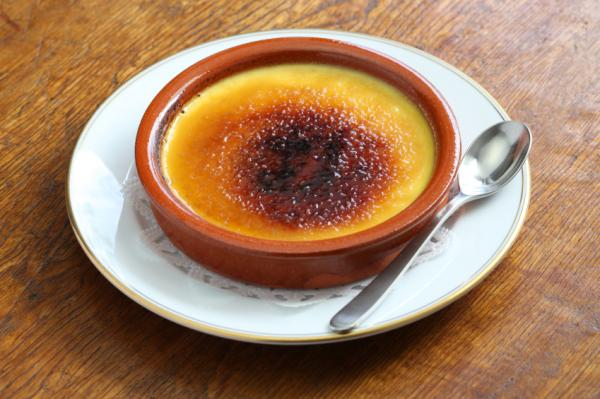

Crema catalana
Tambien haremos una buena crema catalana para despues de comer esos increibles canelones

Ingredientes
- 500 ml de leche
- 1 rama de canela
- La piel de medio limón
- La piel de media naranja
- 4 yemas de huevo
- 15 gr de maicena
- 60 gr de azúcar
Elaboracion
- Quítale la piel a la naranja y al limón pero solo la parte más superficial de forma que no arrastre parte blanca, solo debe ser naranja o amarilla respectivamente. La parte blanca amarga y por eso no nos interesa.
- En un cazo a fuego medio pon la leche junto con la rama de canela y la piel de la naranja y la piel del limón. Justo antes de que empiece a hervir (verás que empieza a haber burbujitas pequeñas en la superficie y quizás un poco de telo propio de la leche, o si tienes un termómetro antes de que llegue a 100ºC), retira el cazo del fuego.
- Mientras, en un bol pon las yemas de huevo junto con el azúcar y la maicena y bátelo todo con unas varillas. Verás que al principio la mezcla es un poco seca, pero si sigues batiendo enérgicamente poco a poco se volverá cremosa y finalmente tendrá un aspecto bastante homogéneo, que es lo que buscamos.
- Vierte en el bol la leche infusionada poco a poco y haciéndola pasar por un colador para que se queden en él las pieles de los cítricos y la rama de canela. Remueve la mezcla.
- De nuevo vierte la mezcla en el cazo que habías utilizado y ponlo a fuego bajo mientras remueves sin parar para que no se te pegue a la vez que se va espesando.
- Ten paciencia porque tarda unos minutos, finalmente verás que se empieza a espesar casi de golpe. Cuando el aspecto sea como el de nuestra fotografía, en el que los surcos de las varillas se empiezan a notar, apártala del fuego, ¡ya está lista!
- Repártela en los moldes o recipientes en los que la vayas a servir, lo más tradicional es servirla en cazuelitas de barro como éstas pero si no tienes no pasa nada. Si no te queda muy lisa por arriba puedes alisarla con el reverso de una cuchara.
- Cuando esté fría puedes introducir los recipientes en la nevera para que repose al menos 4 horas, aunque personalmente me gusta prepararla de un día para otro y así reposa toda la noche en la nevera.
- usto antes de servirla esparce azúcar por encima, la cantidad es al gusto pero te recomiendo entre una y dos cucharadas soperas. Carameliza el azúcar con ayuda de un soplete y ya la tendrás lista para servir.